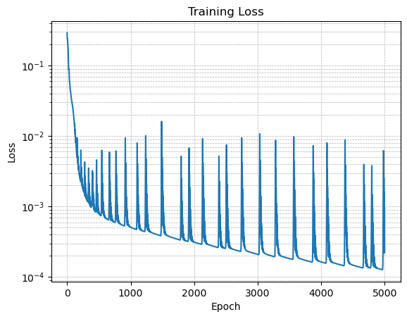
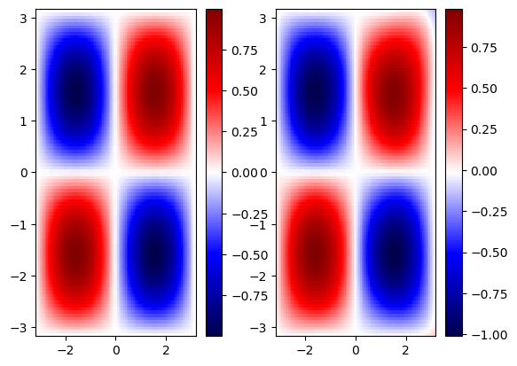
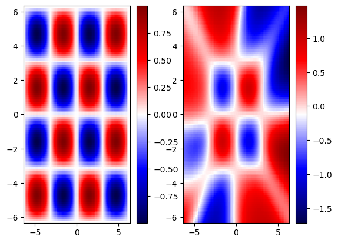
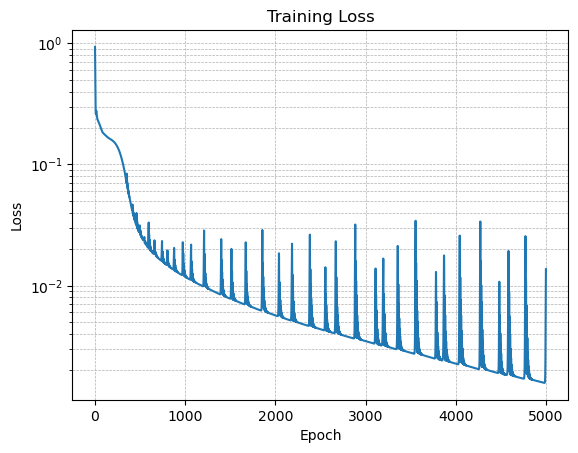

02: Physics-Informed Neural Networks (PINNs)#
Exercise:  Solution:
Solution: 
!pip3 install plotly nbformat --quiet
Requirement already satisfied: plotly in /opt/homebrew/Caskroom/miniforge/base/envs/gns/lib/python3.11/site-packages (5.16.1)
Requirement already satisfied: nbformat in /opt/homebrew/Caskroom/miniforge/base/envs/gns/lib/python3.11/site-packages (5.9.2)
Requirement already satisfied: tenacity>=6.2.0 in /opt/homebrew/Caskroom/miniforge/base/envs/gns/lib/python3.11/site-packages (from plotly) (8.2.3)
Requirement already satisfied: packaging in /opt/homebrew/Caskroom/miniforge/base/envs/gns/lib/python3.11/site-packages (from plotly) (23.1)
Requirement already satisfied: fastjsonschema in /opt/homebrew/Caskroom/miniforge/base/envs/gns/lib/python3.11/site-packages (from nbformat) (2.18.0)
Requirement already satisfied: jsonschema>=2.6 in /opt/homebrew/Caskroom/miniforge/base/envs/gns/lib/python3.11/site-packages (from nbformat) (4.19.0)
Requirement already satisfied: jupyter-core in /opt/homebrew/Caskroom/miniforge/base/envs/gns/lib/python3.11/site-packages (from nbformat) (5.3.1)
Requirement already satisfied: traitlets>=5.1 in /opt/homebrew/Caskroom/miniforge/base/envs/gns/lib/python3.11/site-packages (from nbformat) (5.9.0)
Requirement already satisfied: attrs>=22.2.0 in /opt/homebrew/Caskroom/miniforge/base/envs/gns/lib/python3.11/site-packages (from jsonschema>=2.6->nbformat) (23.1.0)
Requirement already satisfied: jsonschema-specifications>=2023.03.6 in /opt/homebrew/Caskroom/miniforge/base/envs/gns/lib/python3.11/site-packages (from jsonschema>=2.6->nbformat) (2023.7.1)
Requirement already satisfied: referencing>=0.28.4 in /opt/homebrew/Caskroom/miniforge/base/envs/gns/lib/python3.11/site-packages (from jsonschema>=2.6->nbformat) (0.30.2)
Requirement already satisfied: rpds-py>=0.7.1 in /opt/homebrew/Caskroom/miniforge/base/envs/gns/lib/python3.11/site-packages (from jsonschema>=2.6->nbformat) (0.9.2)
Requirement already satisfied: platformdirs>=2.5 in /opt/homebrew/Caskroom/miniforge/base/envs/gns/lib/python3.11/site-packages (from jupyter-core->nbformat) (3.10.0)
Data-driven NN#
import numpy as np
import torch
import torch.nn as nn
import matplotlib.pyplot as plt
from tqdm.notebook import tqdm
# Define the standard neural network model
class StandardNN(nn.Module):
def __init__(self):
super(StandardNN, self).__init__()
self.layers = nn.Sequential(
nn.Linear(in_features=2, out_features=10),
nn.Tanh(),
nn.Linear(in_features=10, out_features=10),
nn.Tanh(),
nn.Linear(in_features=10, out_features=10),
nn.Tanh(),
nn.Linear(10, 1)
)
def forward(self, x, y):
xy = torch.cat((x, y), dim=1)
return self.layers(xy)
# Generate training data
x_data, y_data = np.meshgrid(np.linspace(-np.pi, np.pi, 50), np.linspace(-np.pi, np.pi, 50))
f_data = np.sin(x_data) * np.sin(y_data)
x_data, y_data, f_data = torch.tensor(x_data.flatten()).float().view(-1, 1), torch.tensor(y_data.flatten()).float().view(-1, 1), torch.tensor(f_data.flatten()).float().view(-1, 1)
# Define model
model = StandardNN()
# Define loss function and optimizer
criterion = nn.MSELoss()
optimizer = torch.optim.Adam(model.parameters(), lr=0.01)
losses = []
# Training loop
for epoch in tqdm(range(5000), desc='Data-driven model training progress'):
optimizer.zero_grad()
f_pred = model(x_data, y_data)
loss = criterion(f_pred, f_data)
loss.backward()
optimizer.step()
losses.append(loss.item())
# Plot the loss on a semilog scale
plt.figure()
plt.semilogy(losses)
plt.xlabel('Epoch')
plt.ylabel('Loss')
plt.title('Training Loss')
plt.grid(True, which="both", ls="--", linewidth=0.5)
plt.show()

💡 When the loss function is non-smooth like the one shown here, it means we are probably using a higher learning rate. Try reducing the learning rate to 0.005 and 0.001 to see the effect on the loss evolution
Test the data-driven model#
# Test the model
xyrange = 1 * np.pi
x_test, y_test = np.meshgrid(np.linspace(-xyrange, xyrange, 100), np.linspace(-xyrange, xyrange, 100))
f_test = np.sin(x_test) * np.sin(y_test)
x_test, y_test = torch.tensor(x_test).float().view(-1, 1), torch.tensor(y_test).float().view(-1, 1)
f_pred = model(x_test, y_test).detach().numpy().reshape(100, 100)
# Plotting
fig, ax = plt.subplots(1, 2)
im = ax[0].pcolor(x_test.numpy().reshape(100, 100), y_test.numpy().reshape(100, 100), f_test, cmap='seismic')
plt.colorbar(im, ax=ax[0])
im = ax[1].pcolor(x_test.numpy().reshape(100, 100), y_test.numpy().reshape(100, 100), f_pred, cmap='seismic')
plt.colorbar(im, ax=ax[1])
plt.show()

Extrapolate outside training range#
# Test the model
xyrange = 2 * np.pi
x_test, y_test = np.meshgrid(np.linspace(-xyrange, xyrange, 100), np.linspace(-xyrange, xyrange, 100))
f_test = np.sin(x_test) * np.sin(y_test)
x_test, y_test = torch.tensor(x_test).float().view(-1, 1), torch.tensor(y_test).float().view(-1, 1)
f_pred = model(x_test, y_test).detach().numpy().reshape(100, 100)
# Plotting
fig, ax = plt.subplots(1, 2)
im = ax[0].pcolor(x_test.numpy().reshape(100, 100), y_test.numpy().reshape(100, 100), f_test, cmap='seismic')
plt.colorbar(im, ax=ax[0])
im = ax[1].pcolor(x_test.numpy().reshape(100, 100), y_test.numpy().reshape(100, 100), f_pred, cmap='seismic')
plt.colorbar(im, ax=ax[1])
plt.show()

PINNs#
The Laplace equation is a second-order partial differential equation and is given by:
\[ \nabla^2 f = \frac{\partial^2 f}{\partial x^2} + \frac{\partial^2 f}{\partial y^2} = 0 \]
So, if you have \(f(x,y) = \sin(x) \sin(y)\), you can plug it into the equation and calculate the second derivatives.
The second partial derivative with respect to \(x\):
\[ \frac{\partial^2 f}{\partial x^2} = \frac{\partial}{\partial x} \left( \frac{\partial}{\partial x} \sin(x) \sin(y) \right) = \frac{\partial}{\partial x} \left( \cos(x) \sin(y) \right) = -\sin(x) \sin(y) \]
The second partial derivative with respect to \(y\):
\[ \frac{\partial^2 f}{\partial y^2} = \frac{\partial}{\partial y} \left( \frac{\partial}{\partial y} \sin(x) \sin(y) \right) = \frac{\partial}{\partial y} \left( \sin(x) \cos(y) \right) = -\sin(x) \sin(y) \]
Putting it together, the Laplacian of \(f\) is:
\[ \nabla^2 f = \frac{\partial^2 f}{\partial x^2} + \frac{\partial^2 f}{\partial y^2} = -\sin(x) \sin(y) - \sin(x) \sin(y) = -2 \sin(x) \sin(y) \]
Rearranging the terms to equate to zero, we get the loss function for PINN as:
\[\mathcal{L} = \frac{\partial^2 f}{\partial x^2} + \frac{\partial^2 f}{\partial y^2} + 2 \sin(x) \sin(y)\]
import numpy as np
import torch
import torch.nn as nn
import matplotlib.pyplot as plt
from tqdm.notebook import tqdm
# Define the PINN model
class PINN(nn.Module):
def __init__(self):
super(PINN, self).__init__()
self.layers = nn.Sequential(
nn.Linear(2, 10),
nn.Tanh(),
nn.Linear(10, 10),
nn.Tanh(),
nn.Linear(10, 10),
nn.Tanh(),
nn.Linear(10, 1)
)
def forward(self, x, y):
xy = torch.cat((x, y), dim=1)
return self.layers(xy)
def loss_function(self, x, y):
f = self.forward(x, y)
f_x = torch.autograd.grad(f.sum(), x, create_graph=True)[0]
f_xx = torch.autograd.grad(f_x.sum(), x, create_graph=True)[0]
f_y = torch.autograd.grad(f.sum(), y, create_graph=True)[0]
f_yy = torch.autograd.grad(f_y.sum(), y, create_graph=True)[0]
pde_loss = f_xx + f_yy + 2 * f
return torch.mean((f - torch.sin(x) * torch.sin(y))**2) + torch.mean(pde_loss**2)
# Generate training data
x_data, y_data = np.meshgrid(np.linspace(-np.pi, np.pi, 50), np.linspace(-np.pi, np.pi, 50))
x_data, y_data = torch.tensor(x_data.flatten(), requires_grad=True).float().view(-1, 1), torch.tensor(y_data.flatten(), requires_grad=True).float().view(-1, 1)
# Define model
model = PINN()
# Define optimizer
optimizer = torch.optim.Adam(model.parameters(), lr=0.005)
losses = []
# Training loop
for pinn_epoch in tqdm(range(5000), desc='Physics-informed model training progress'):
optimizer.zero_grad()
loss = model.loss_function(x_data, y_data)
loss.backward()
optimizer.step()
losses.append(loss.item())
# Plot the loss on a semilog scale
plt.figure()
plt.semilogy(losses)
plt.xlabel('Epoch')
plt.ylabel('Loss')
plt.title('Training Loss')
plt.grid(True, which="both", ls="--", linewidth=0.5)
plt.show()

Test the PINN model#
# Generate test data
xyrange = 1 * np.pi
x_test, y_test = np.meshgrid(np.linspace(-xyrange, xyrange, 100), np.linspace(-xyrange, xyrange, 100))
x_test, y_test = torch.tensor(x_test).float().view(-1, 1), torch.tensor(y_test).float().view(-1, 1)
f_test = (torch.sin(x_test) * torch.sin(y_test)).detach().numpy().reshape(100, 100)
f_pred = model(x_test, y_test).detach().numpy().reshape(100, 100)
# Plotting
fig, ax = plt.subplots(1, 2)
im = ax[0].pcolor(x_test.numpy().reshape(100, 100), y_test.numpy().reshape(100, 100), f_test, cmap='seismic')
plt.colorbar(im, ax=ax[0])
im = ax[1].pcolor(x_test.numpy().reshape(100, 100), y_test.numpy().reshape(100, 100), f_pred, cmap='seismic')
plt.colorbar(im, ax=ax[1])
plt.show()

import plotly.graph_objects as go
fig = go.Figure(data=[
go.Surface(z=f_test, x=x_test.numpy().reshape(100, 100), y=y_test.numpy().reshape(100, 100))
])
fig.update_layout(title='Original Data', autosize=False,
width=500, height=500,
margin=dict(l=65, r=50, b=65, t=90))
fig.show()
Error plot#
import plotly.graph_objects as go
error = f_test - f_pred
fig = go.Figure(data=[go.Surface(z=error, x=x_test.numpy().reshape(100, 100), y=y_test.numpy().reshape(100, 100))])
fig.update_layout(title='Error between prediction and original data',
autosize=False, width=500, height=500,
margin=dict(l=65, r=50, b=65, t=90))
fig.show()
Extrapolate outside training regime#
# Generate test data
xyrange = 2 * np.pi
x_test, y_test = np.meshgrid(np.linspace(-xyrange, xyrange, 100), np.linspace(-xyrange, xyrange, 100))
x_test, y_test = torch.tensor(x_test).float().view(-1, 1), torch.tensor(y_test).float().view(-1, 1)
f_test = (torch.sin(x_test) * torch.sin(y_test)).detach().numpy().reshape(100, 100)
f_pred = model(x_test, y_test).detach().numpy().reshape(100, 100)
# Plotting
fig, ax = plt.subplots(1, 2)
im = ax[0].pcolor(x_test.numpy().reshape(100, 100), y_test.numpy().reshape(100, 100), f_test, cmap='seismic')
plt.colorbar(im, ax=ax[0])
im = ax[1].pcolor(x_test.numpy().reshape(100, 100), y_test.numpy().reshape(100, 100), f_pred, cmap='seismic')
plt.colorbar(im, ax=ax[1])
plt.show()